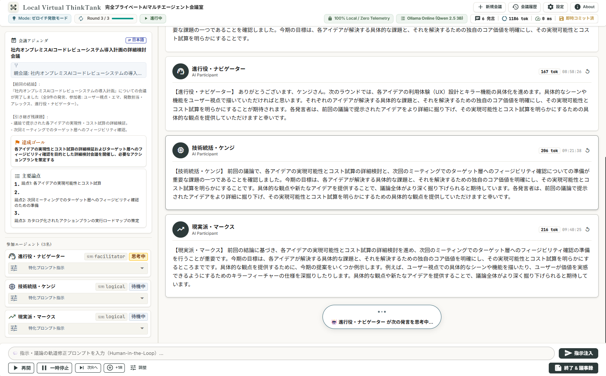
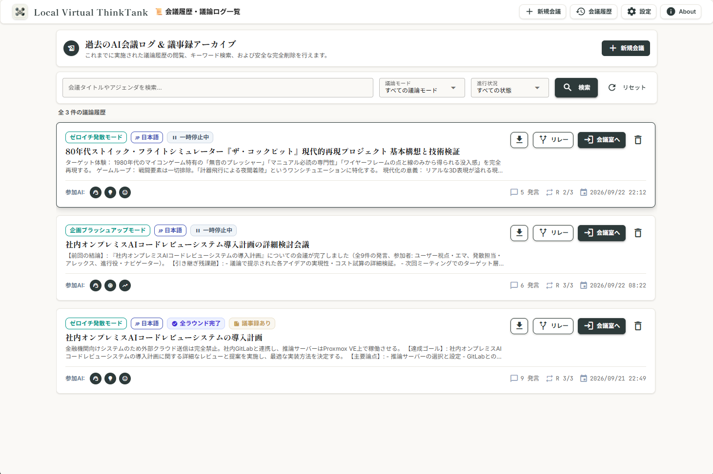
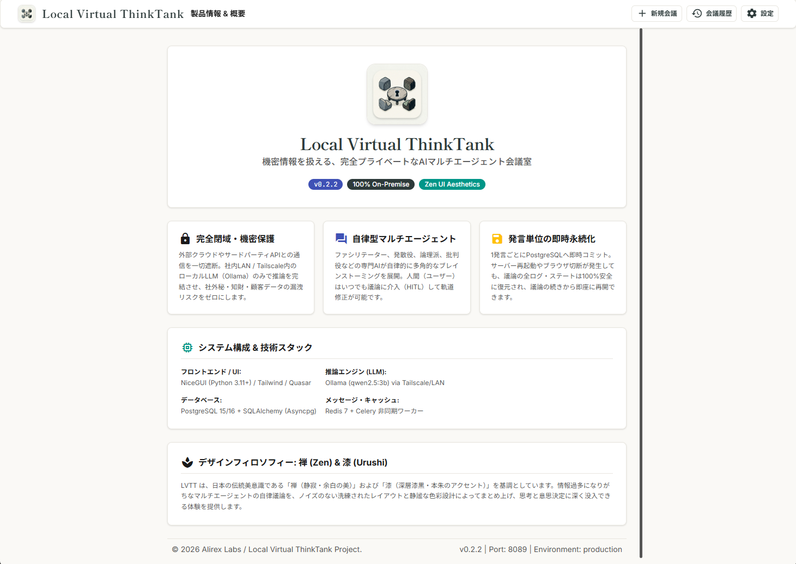

✨ v0.2.2
•
鳥の子色と深墨が織りなす「禅」デザインシステム
機密情報を扱える、
完全プライベートなAIマルチエージェント会議室。
未公開の新規事業企画、特許・知財戦略、社外秘メモ、ソースコード。
外部クラウドへの送信を一切行わず、社内閉域網のローカルLLMのみで自律型ブレインストーミングを実現します。

Core Value Propositions
LVTTが選ばれる3つのコア価値
従来のクラウドAIでは扱えなかった最高機密の議論を、完全な安心感と高密度なマルチ視点で前進させます。
100% ローカル推論・閉域保護
外部クラウドAPIへのデータ送信は一切遮断。社内LAN/Proxmox VE上のOllama（Qwen 2.5 3B等）およびPostgreSQLのみで完結し、情報漏洩リスクを根本からゼロにします。
3名の専門AIによる自律議論
進行役（ファシリテーター）、自由奔放な発散役、冷徹な論理批判役など、異なるペルソナを持つ3名のAIが自律周回ブレストを展開。単一プロンプトでは見落としがちな死角を洗い出します。
発言即時永続化 ＆ 人間介入 (HITL)
1発言ごとにDBへ即座にコミット。サーバー切断時も100%復元可能です。さらに人間がいつでも「指示介入」を割り込ませ、AIが即座に方針を切り替える柔軟性を備えています。
End-to-End Workflow
アイデアから意思決定までの4ステップ
曖昧なテーマ入力から、AIによる自律議論、構造化議事録の確定、次フェーズへの連続リレーまでシームレスに進行します。

Step 01
助走モード（自動分解）
曖昧なテーマや制約メモから、プロデューサーAIがゴールと主要論点3点、最適ペルソナを自動設計。
Step 02
マルチエージェント議論
3名のAIが自律ブレストを展開。オーナーは一時停止やラウンド延長、割り込み指示がいつでも可能。
Step 03
構造化議事録確定
結論、決定事項、主要論点、残課題を自動整理。インライン直接編集やMarkdown/JSONダウンロードに対応。
Step 04
次フェーズ議論リレー
前回のサマリー（決定事項・残課題）をワンクリックで引き継ぎ、新たなペルソナで連続会議を深化。
Actual UI Showcase
実際の稼働中アプリケーション画面
余計な装飾を削ぎ落とした「和モダン（禅）× 静寂」のUI。実機キャプチャでその佇まいをご確認いただけます。





Technical Architecture
完全オンプレミスを支える技術スタック
モダンかつ堅牢なオープンソース技術群を採用し、外部クラウド依存を完全に排除しています。
推論エンジン
Ollama (Qwen 2.5)
Proxmox VE / RTX 4080 (VRAM 16GB) にて 3B / 7B モデルを高速ローカル実行。外部通信一切なし。
Web / UI フレームワーク
NiceGUI + FastAPI
Python 3.11+ ベースで構築。WebSocketストリーミングによる超低遅延UI更新と禅モダンデザイン。
データベース
PostgreSQL 16
発言1件ごとの即時コミット、構造化議事録、および親子リレーション（議論リレー）を堅牢に永続化。
ネットワーク & セキュリティ
Tailscale / 社内閉域網
SSL暗号化リバースプロキシとVPNを介し、社外にポート開放することなく安全にアクセス可能。
安全な環境で、最高のアイデア発散を。
詳しい画面操作方法、助走モードの活用法、エクスポート手順は公式ユーザー操作マニュアルをご覧ください。